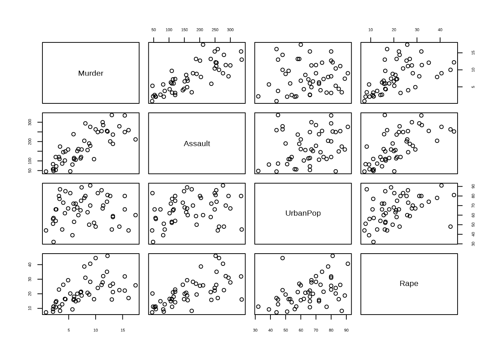
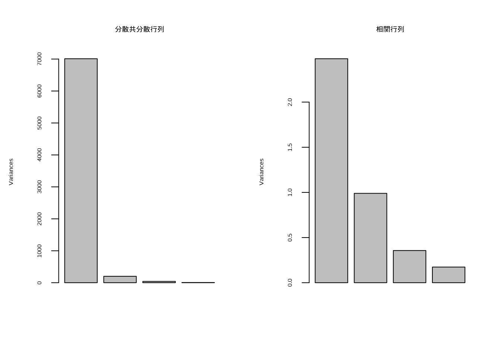
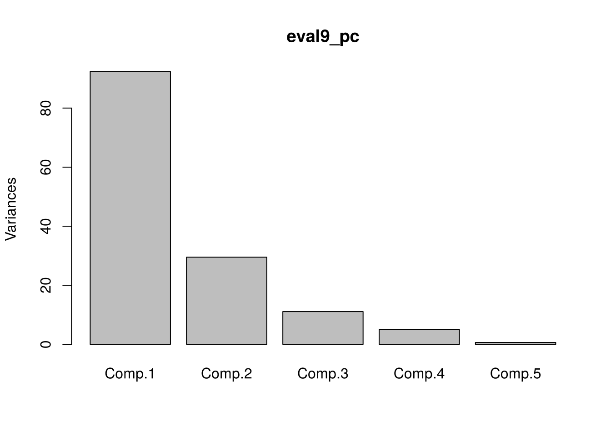
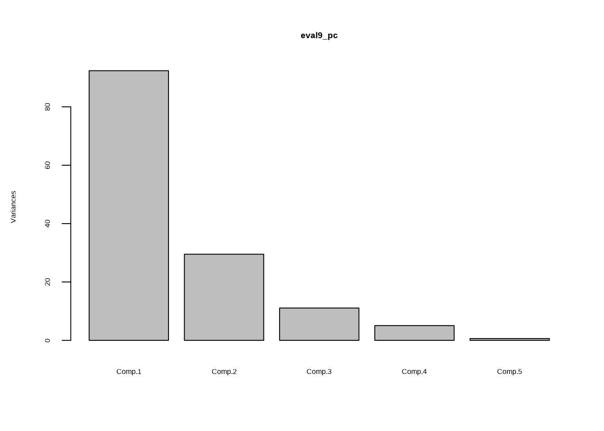
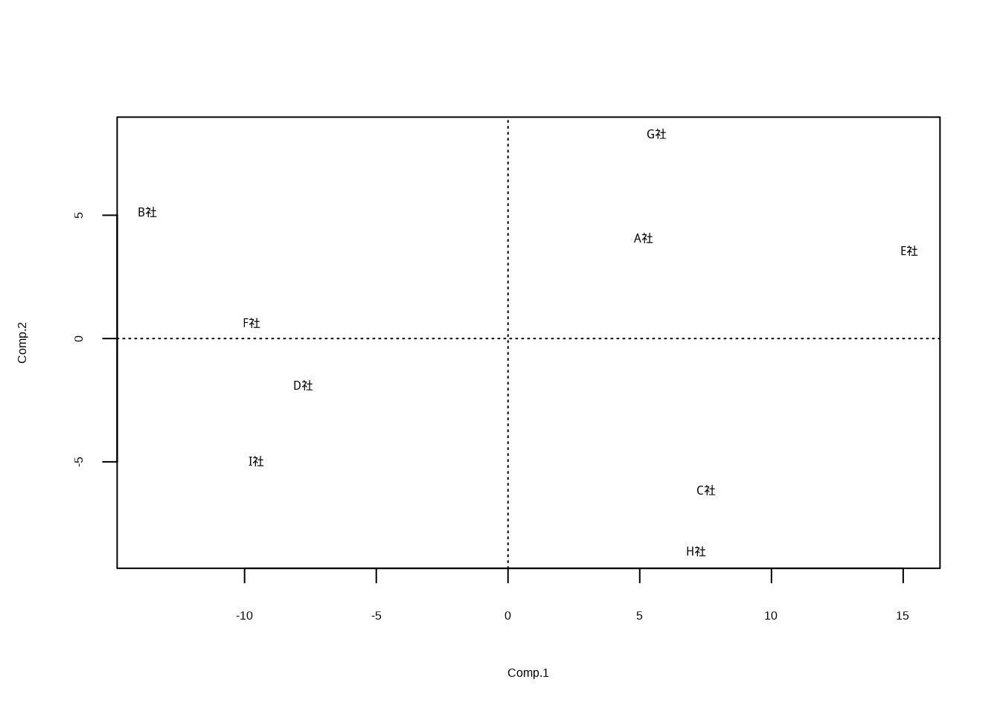
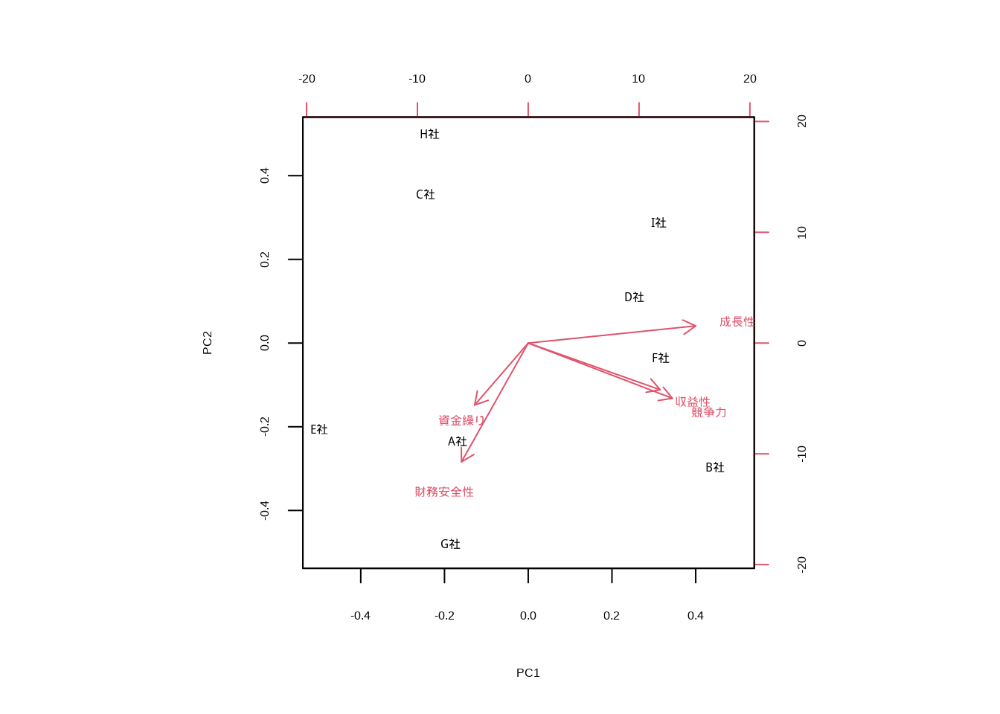
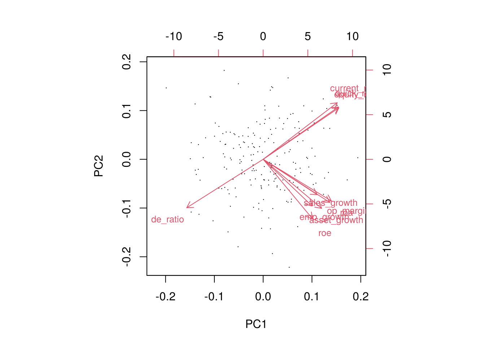
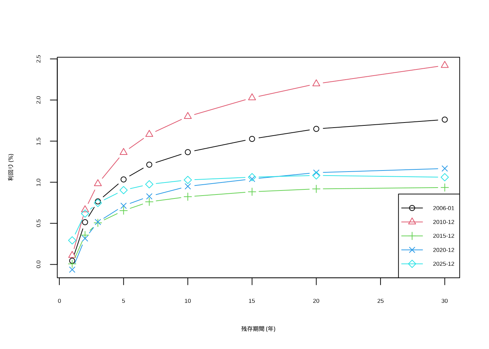
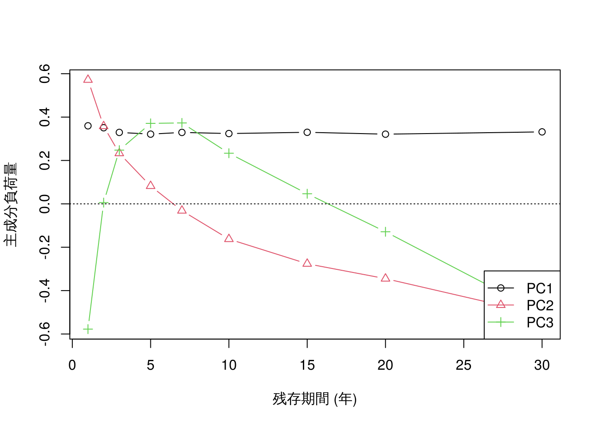
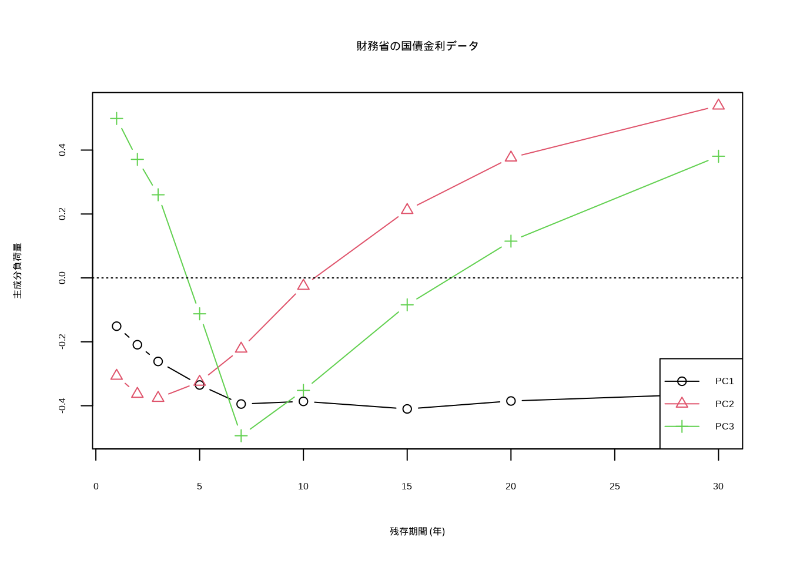

Chapter 12 主成分分析 (PCA)
本章の内容は, 授業の R 演習スクリプト R_pca_dist.R に対応する.
主成分分析 (principal component analysis, PCA) は, 互いに相関のある多数の変数を, 情報の損失をできるだけ小さくしながら, 互いに無相関な少数の合成変数 (主成分) に集約する手法である. 第1主成分は, 変数の線形結合のうち分散が最大となるもの, 第2主成分は, 第1主成分と無相関なもののうち分散が最大となるもの, … と順に定められる. 主成分の係数を主成分負荷量, 各個体の主成分の値を主成分得点と呼ぶ.
R では, 標準パッケージの関数princomp()とprcomp()で実行できる.
princomp(): 分散共分散行列 (引数cor = TRUEなら相関行列) を固有値分解して計算する. 分散は n で割る.prcomp(): 中心化した (引数scale. = TRUEなら標準化もした) データ行列を特異値分解 (SVD) して計算する. 分散は n − 1 で割る (不偏分散).
両者の主成分負荷量は (符号を除いて) 一致し, 寄与率も同じである. 違うのは主成分の標準偏差 (n と n − 1 の違いによる) だけである.
R のヘルプでは, 数値計算の精度の点で prcomp() (特異値分解) が推奨されている. また, princomp() は変数の数が個体数より多い場合には使えない.
12.1 導入
データ: 米国50州の凶悪犯罪 (実データ: R の組み込みデータ USArrests)
USArrests: n = 50, p = 4
- 全米50州 (1973年) の, 人口10万人当たりの凶悪犯罪の逮捕者数
(Murder: 殺人, Assault: 暴行, Rape: 強姦), 及び都市部の人口割合 (UrbanPop, %)金融データではないが, 変数の散らばりの大きさ (スケール) の違いが PCA の結果にどう影響するかを理解するのに適したデータである.

summary(USArrests)
#> Murder Assault UrbanPop Rape
#> Min. : 0.800 Min. : 45.0 Min. :32.00 Min. : 7.30
#> 1st Qu.: 4.075 1st Qu.:109.0 1st Qu.:54.50 1st Qu.:15.07
#> Median : 7.250 Median :159.0 Median :66.00 Median :20.10
#> Mean : 7.788 Mean :170.8 Mean :65.54 Mean :21.23
#> 3rd Qu.:11.250 3rd Qu.:249.0 3rd Qu.:77.75 3rd Qu.:26.18
#> Max. :17.400 Max. :337.0 Max. :91.00 Max. :46.00
round(apply(USArrests, 2, sd), 1) # 変数によって散らばりの大きさが大きく異なる
#> Murder Assault UrbanPop Rape
#> 4.4 83.3 14.5 9.4Assault の標準偏差は, 他の変数より一桁以上大きい.
# どちらが良いか?
(pc_cr3 <- prcomp(USArrests)) # 分散共分散行列に対する PCA (標準化しない)
#> Standard deviations (1, .., p=4):
#> [1] 83.732400 14.212402 6.489426 2.482790
#>
#> Rotation (n x k) = (4 x 4):
#> PC1 PC2 PC3 PC4
#> Murder 0.04170432 -0.04482166 0.07989066 -0.99492173
#> Assault 0.99522128 -0.05876003 -0.06756974 0.03893830
#> UrbanPop 0.04633575 0.97685748 -0.20054629 -0.05816914
#> Rape 0.07515550 0.20071807 0.97408059 0.07232502
(pc_cr4 <- prcomp(USArrests, scale. = TRUE)) # 相関行列に対する PCA (各変数を標準化)
#> Standard deviations (1, .., p=4):
#> [1] 1.5748783 0.9948694 0.5971291 0.4164494
#>
#> Rotation (n x k) = (4 x 4):
#> PC1 PC2 PC3 PC4
#> Murder -0.5358995 -0.4181809 0.3412327 0.64922780
#> Assault -0.5831836 -0.1879856 0.2681484 -0.74340748
#> UrbanPop -0.2781909 0.8728062 0.3780158 0.13387773
#> Rape -0.5434321 0.1673186 -0.8177779 0.08902432
par(mfrow = c(1, 1))
summary(pc_cr3)
#> Importance of components:
#> PC1 PC2 PC3 PC4
#> Standard deviation 83.7324 14.21240 6.4894 2.48279
#> Proportion of Variance 0.9655 0.02782 0.0058 0.00085
#> Cumulative Proportion 0.9655 0.99335 0.9991 1.00000
summary(pc_cr4)
#> Importance of components:
#> PC1 PC2 PC3 PC4
#> Standard deviation 1.5749 0.9949 0.59713 0.41645
#> Proportion of Variance 0.6201 0.2474 0.08914 0.04336
#> Cumulative Proportion 0.6201 0.8675 0.95664 1.00000分散共分散行列に対する PCA では, 第1主成分の負荷量はほぼ Assault だけで決まり, 第1主成分だけで全変動の97%を説明する.
これは, 4つの変数の関係を捉えた結果ではなく, 単に Assault の分散が大きいことを反映しているに過ぎない.
一方, 相関行列に対する PCA (各変数を標準化) では, 第1主成分は3種類の犯罪の逮捕者数にほぼ同じ大きさの負荷量を持ち (「凶悪犯罪の多さ」. ここでは負荷量の符号が負なので, 得点が小さいほど凶悪犯罪が多い), 第2主成分は主に UrbanPop (「都市化の程度」) を表している.
単位や散らばりの大きさが異なる変数を扱う場合は, 各変数を標準化する (相関行列に対する PCA を行う) のが基本である. 逆に, 全ての変数の単位がそろっていて, 散らばりの大きさの違い自体に意味がある場合 (例えば, 同じ満点の評価項目や, 同じ単位の金利変化) は, 分散共分散行列に対する PCA を使って良い.
12.2 基本操作
データ: 企業の評価スコア (仮想データ)
firm_eval9.csv: n = 9社 (A社〜I社), p = 5 (仮想データ)
- 証券アナリストが5項目 (財務安全性, 資金繰り, 収益性, 成長性, 競争力) を100点満点で評価スライド「主成分分析 (2)」の実行例と同じデータである.
1列目の企業名を行名に使う (row.names = 1).
eval9 <- read.csv("class/firm_eval9.csv", header = TRUE, row.names = 1)
eval9
#> 財務安全性 資金繰り 収益性 成長性 競争力
#> A社 79 82 74 67 79
#> B社 77 80 84 83 85
#> C社 72 81 69 70 72
#> D社 72 77 79 77 82
#> E社 84 79 72 61 70
#> F社 74 73 84 74 84
#> G社 85 84 75 71 76
#> H社 72 76 71 70 69
#> I社 72 72 79 80 80
pairs(eval9)
PCA の実行
5項目とも同じ100点満点の尺度なので, 分散共分散行列に対する PCA (princomp() のデフォルト) を使う.
eval9_pc <- princomp(eval9)
summary(eval9_pc) # 寄与率, 累積寄与率
#> Importance of components:
#> Comp.1 Comp.2 Comp.3 Comp.4 Comp.5
#> Standard deviation 9.6112630 5.4319615 3.32993711 2.25028975 0.794857813
#> Proportion of Variance 0.6661758 0.2127851 0.07996501 0.03651782 0.004556242
#> Cumulative Proportion 0.6661758 0.8789609 0.95892594 0.99544376 1.000000000
plot(eval9_pc) # スクリープロット (主成分の分散の棒グラフ)
主成分負荷量
eval9_pc$loadings # 絶対値 0.1 未満は空欄で表示される
#>
#> Loadings:
#> Comp.1 Comp.2 Comp.3 Comp.4 Comp.5
#> 財務安全性 0.246 0.775 0.492 0.301
#> 資金繰り 0.198 0.404 -0.695 -0.378 -0.414
#> 収益性 -0.486 0.305 0.386 0.138 -0.709
#> 成長性 -0.618 -0.112 -0.592 0.484 0.148
#> 競争力 -0.531 0.361 0.110 -0.601 0.462
#>
#> Comp.1 Comp.2 Comp.3 Comp.4 Comp.5
#> SS loadings 1.0 1.0 1.0 1.0 1.0
#> Proportion Var 0.2 0.2 0.2 0.2 0.2
#> Cumulative Var 0.2 0.4 0.6 0.8 1.0
# t(eval9_pc$loadings) %*% eval9_pc$loadings # 直交性の確認 (単位行列)
plot(eval9_pc$loadings[, 1:2], type = "n") # 軸だけ描く
text(eval9_pc$loadings[, 1:2], colnames(eval9))
abline(h = 0, v = 0, lty = 3)
主成分得点
eval9_pc$scores
#> Comp.1 Comp.2 Comp.3 Comp.4 Comp.5
#> A社 5.141785 4.0683398 0.1271663 -4.059763 0.78988793
#> B社 -13.680088 5.1248969 -3.5730122 1.227718 -0.93405667
#> C社 7.521455 -6.1471305 -4.1713510 -2.158946 -0.15403012
#> D社 -7.770391 -1.8967077 -0.5699581 -1.892606 0.07479897
#> E社 15.240535 3.5491403 4.3713388 1.767457 -0.09113405
#> F社 -9.710494 0.6174593 6.2850480 -1.360840 -0.72587857
#> G社 5.649983 8.3024390 -3.1280249 2.017947 0.26138616
#> H社 7.155276 -8.6417196 -0.2523022 1.809469 -0.88593118
#> I社 -9.548061 -4.9767175 0.9110953 2.649563 1.66495755
plot(eval9_pc$scores[, 1:2], type = "n")
text(eval9_pc$scores[, 1:2], rownames(eval9))
abline(h = 0, v = 0, lty = 3)
自主課題 第1主成分得点が最も高いのはE社である. E社は「収益・成長性」が高いと言えるか? (ヒント: 負荷量の符号に注意)
関数 prcomp()
eval9_prcomp <- prcomp(eval9, retx = TRUE)
summary(eval9_prcomp)
#> Importance of components:
#> PC1 PC2 PC3 PC4 PC5
#> Standard deviation 10.1943 5.7615 3.53193 2.38679 0.84307
#> Proportion of Variance 0.6662 0.2128 0.07997 0.03652 0.00456
#> Cumulative Proportion 0.6662 0.8790 0.95893 0.99544 1.00000
eval9_prcomp$rotation # 主成分負荷量
#> PC1 PC2 PC3 PC4 PC5
#> 財務安全性 -0.2459831 -0.7752010 0.07402017 -0.4924136 0.3010076
#> 資金繰り -0.1975162 -0.4044298 -0.69507037 0.3775120 -0.4144705
#> 収益性 0.4864186 -0.3047246 0.38647717 -0.1383001 -0.7085537
#> 成長性 0.6176383 0.1122004 -0.59159783 -0.4839245 0.1475234
#> 競争力 0.5314129 -0.3606298 0.10975246 0.6014181 0.4623820
eval9_prcomp$x # 主成分得点
#> PC1 PC2 PC3 PC4 PC5
#> A社 -5.141785 -4.0683398 0.1271663 4.059763 0.78988793
#> B社 13.680088 -5.1248969 -3.5730122 -1.227718 -0.93405667
#> C社 -7.521455 6.1471305 -4.1713510 2.158946 -0.15403012
#> D社 7.770391 1.8967077 -0.5699581 1.892606 0.07479897
#> E社 -15.240535 -3.5491403 4.3713388 -1.767457 -0.09113405
#> F社 9.710494 -0.6174593 6.2850480 1.360840 -0.72587857
#> G社 -5.649983 -8.3024390 -3.1280249 -2.017947 0.26138616
#> H社 -7.155276 8.6417196 -0.2523022 -1.809469 -0.88593118
#> I社 9.548061 4.9767175 0.9110953 -2.649563 1.66495755
biplot(eval9_prcomp)
princomp() と prcomp() では, 主成分負荷量・主成分得点の符号が逆になっている主成分がある.
主成分の符号は一意に定まらない (負荷量ベクトルの向きを反転させても, 分散や他の主成分との無相関性は変わらない) ので, 解釈しやすい向きに読み替えて良い.
また, prcomp() は不偏分散を使うので, 主成分の標準偏差の値も少し異なる (寄与率は同じ).
(参考) 固有値分解と特異値分解
princomp() は分散共分散行列の固有値分解, prcomp() はデータ行列の特異値分解で計算するが, 得られる主成分は同じである.
中心化したデータ行列 \(X\) (\(n \times p\)) を \(X = UDV'\) と特異値分解すると,
\(V\) の列が主成分負荷量 (分散共分散行列の固有ベクトル), \(XV = UD\) が主成分得点, \(D^2/(n-1)\) が固有値 (主成分の分散) になる.
分散共分散行列 \(X'X/(n-1)\) を明示的に作らずに計算できるので, 数値計算の誤差が小さい.
X <- scale(eval9, scale = FALSE) # 中心化したデータ行列
e <- eigen(cov(X)) # 分散共分散行列の固有値分解
sv <- svd(X) # データ行列の特異値分解 X = UDV'
round(cbind(固有ベクトル = e$vectors[, 1], V = sv$v[, 1]), 3) # 第1主成分負荷量 (符号を除いて一致)
#> 固有ベクトル V
#> [1,] -0.246 -0.246
#> [2,] -0.198 -0.198
#> [3,] 0.486 0.486
#> [4,] 0.618 0.618
#> [5,] 0.531 0.531
round(rbind(固有値 = e$values, `D^2/(n-1)` = sv$d^2/(nrow(X) - 1)), 3)
#> [,1] [,2] [,3] [,4] [,5]
#> 固有値 103.923 33.194 12.475 5.697 0.711
#> D^2/(n-1) 103.923 33.194 12.475 5.697 0.71112.3 分散共分散行列 vs 相関行列
データ: 上場企業の財務比率 (仮想データ)
firm_ratios.csv: 200社 (仮想データ)
- firm_id: 企業ID, industry: 業種 ("manuf": 製造業, "nonmanuf": 非製造業)
- 安全性: current_ratio (流動比率, %), quick_ratio (当座比率, %),
equity_ratio (自己資本比率, %), de_ratio (D/Eレシオ, 倍)
- 収益性: roa (総資産利益率, %), roe (自己資本利益率, %), op_margin (営業利益率, %)
- 成長性: sales_growth (売上高成長率, %), asset_growth (総資産成長率, %),
emp_growth (従業員数増加率, %)firm <- read.csv("class/firm_ratios.csv")
ratios <- firm %>%
dplyr::select(current_ratio:emp_growth)
summary(ratios)
#> current_ratio quick_ratio equity_ratio de_ratio
#> Min. : 61.0 Min. : 30.00 Min. : 8.00 Min. :0.0500
#> 1st Qu.:127.8 1st Qu.: 83.17 1st Qu.:36.70 1st Qu.:0.6450
#> Median :161.7 Median :109.80 Median :44.55 Median :0.8950
#> Mean :161.8 Mean :111.63 Mean :44.69 Mean :0.8934
#> 3rd Qu.:195.6 3rd Qu.:138.62 3rd Qu.:52.80 3rd Qu.:1.1600
#> Max. :294.8 Max. :236.50 Max. :77.10 Max. :1.9600
#> roa roe op_margin sales_growth
#> Min. :-3.500 Min. :-1.400 Min. :-2.500 Min. :-18.300
#> 1st Qu.: 2.575 1st Qu.: 5.600 1st Qu.: 5.500 1st Qu.: 0.400
#> Median : 4.300 Median : 8.000 Median : 8.200 Median : 4.450
#> Mean : 4.212 Mean : 8.492 Mean : 8.033 Mean : 4.111
#> 3rd Qu.: 5.800 3rd Qu.:11.050 3rd Qu.:10.300 3rd Qu.: 8.500
#> Max. :10.100 Max. :20.600 Max. :18.100 Max. : 25.900
#> asset_growth emp_growth
#> Min. :-11.400 Min. :-7.000
#> 1st Qu.: -0.325 1st Qu.:-0.625
#> Median : 3.600 Median : 2.100
#> Mean : 3.393 Mean : 1.982
#> 3rd Qu.: 6.800 3rd Qu.: 4.500
#> Max. : 15.700 Max. : 9.800
round(apply(ratios, 2, sd), 2) # 変数によって標準偏差 (スケール) が大きく異なる
#> current_ratio quick_ratio equity_ratio de_ratio roa
#> 48.87 41.02 13.00 0.39 2.52
#> roe op_margin sales_growth asset_growth emp_growth
#> 4.42 3.67 6.38 4.99 3.45分散共分散行列に対する PCA
pc_cov <- prcomp(ratios)
summary(pc_cov)
#> Importance of components:
#> PC1 PC2 PC3 PC4 PC5 PC6 PC7
#> Standard deviation 61.3465 20.70215 8.1119 7.32591 5.49779 2.41149 2.22781
#> Proportion of Variance 0.8638 0.09837 0.0151 0.01232 0.00694 0.00133 0.00114
#> Cumulative Proportion 0.8638 0.96219 0.9773 0.98961 0.99655 0.99788 0.99902
#> PC8 PC9 PC10
#> Standard deviation 1.71403 1.12494 0.21983
#> Proportion of Variance 0.00067 0.00029 0.00001
#> Cumulative Proportion 0.99970 0.99999 1.00000
round(pc_cov$rotation[, 1:3], 3)
#> PC1 PC2 PC3
#> current_ratio 0.768 0.628 0.025
#> quick_ratio 0.615 -0.777 0.083
#> equity_ratio 0.177 -0.017 -0.223
#> de_ratio -0.005 0.000 0.005
#> roa 0.011 -0.005 -0.118
#> roe 0.004 0.001 -0.216
#> op_margin 0.017 0.005 -0.185
#> sales_growth 0.023 -0.037 -0.679
#> asset_growth 0.014 -0.022 -0.541
#> emp_growth 0.007 -0.026 -0.308USArrests と同様に, 第1主成分は, 分散の大きい流動比率・当座比率でほぼ決まってしまう.
相関行列に対する PCA
pc_cor <- prcomp(ratios, scale. = TRUE)
summary(pc_cor)
#> Importance of components:
#> PC1 PC2 PC3 PC4 PC5 PC6 PC7
#> Standard deviation 2.0509 1.5316 1.3628 0.60438 0.51315 0.48015 0.4626
#> Proportion of Variance 0.4206 0.2346 0.1857 0.03653 0.02633 0.02305 0.0214
#> Cumulative Proportion 0.4206 0.6552 0.8409 0.87744 0.90377 0.92682 0.9482
#> PC8 PC9 PC10
#> Standard deviation 0.44882 0.40510 0.39018
#> Proportion of Variance 0.02014 0.01641 0.01522
#> Cumulative Proportion 0.96837 0.98478 1.00000
plot(pc_cor, type = "lines", main = "スクリープロット (相関行列)")
abline(h = 1, lty = 2) # 固有値 1 の目安 (Kaiser-Guttman ルール)
round(pc_cor$rotation[, 1:3], 3)
#> PC1 PC2 PC3
#> current_ratio 0.357 0.366 0.016
#> quick_ratio 0.363 0.339 -0.039
#> equity_ratio 0.365 0.332 0.037
#> de_ratio -0.369 -0.313 0.021
#> roa 0.322 -0.279 0.383
#> roe 0.238 -0.385 0.399
#> op_margin 0.329 -0.270 0.360
#> sales_growth 0.261 -0.229 -0.495
#> asset_growth 0.282 -0.317 -0.381
#> emp_growth 0.236 -0.302 -0.414相関行列に対する PCA では, 主成分の分散 (= 相関行列の固有値) が1を超える主成分を採用するという目安 (Kaiser-Guttman ルール) がよく使われる. 標準化した変数1つ分の分散が1なので, 「元の変数1つ分より多くの情報を持つ主成分」を残すという考え方である.
自主課題 第1〜第3主成分は, それぞれどのような意味に解釈できるか?
第1主成分は全指標の「総合的な良さ」と解釈できるが, 第2, 第3主成分は複数の系統の指標が混ざっていて解釈しにくい.
同じデータを因子分析 (回転あり) で分析すると, 解釈しやすい結果になる (授業の R スクリプト R_fa_dist.R を参照).

主成分得点の上位の企業を確認する.
firm %>%
mutate(pc1 = pc_cor$x[, 1], pc2 = pc_cor$x[, 2]) %>%
arrange(desc(pc1)) %>%
dplyr::select(firm_id, industry, pc1, pc2, equity_ratio, roa, sales_growth) %>%
head()
#> firm_id industry pc1 pc2 equity_ratio roa sales_growth
#> 1 F089 manuf 5.620138 0.06758812 70.5 7.7 15.8
#> 2 F018 nonmanuf 4.992126 -0.91664240 55.0 8.9 5.5
#> 3 F082 manuf 4.390812 2.39843452 70.2 5.9 10.7
#> 4 F056 manuf 3.950490 1.36921514 63.3 4.9 9.5
#> 5 F031 nonmanuf 3.876102 -0.58862638 62.2 8.4 9.6
#> 6 F062 nonmanuf 3.777238 2.25211659 77.1 8.8 0.212.4 イールドカーブへの応用
データ: 国債金利 (実データ: 財務省「国債金利情報」)
財務省は, 国債の流通利回りから計算した残存期間ごとの金利 (国債金利) をウェブサイトで公開しており, R から直接読み込むことができる.
財務省「国債金利情報」: https://www.mof.go.jp/jgbs/reference/interest_rate/
- jgbcm_all.csv: 1974年9月以降の日次データ (残存期間 1〜40年, 単位 %)
- 1行目はタイトル, 2行目が列名. 文字コードは Shift_JIS. 欠損値は "-". 基準日は和暦 (例: R8.10.30)url <- "https://www.mof.go.jp/jgbs/reference/interest_rate/data/jgbcm_all.csv"
jgb_mof <- read.csv(url, skip = 1, header = TRUE, fileEncoding = "Shift_JIS", na.strings = "-",
check.names = FALSE)
names(jgb_mof)[1] <- "date"
tail(jgb_mof, 3)
#> date 1年 2年 3年 4年 5年 6年 7年 8年 9年 10年
#> 13328 R8.10.28 1.674 1.915 2.015 2.166 2.281 2.365 2.473 2.614 2.739 2.867
#> 13329 R8.10.29 1.677 1.901 2.016 2.171 2.285 2.370 2.479 2.621 2.744 2.876
#> 13330 R8.10.30 1.659 1.875 1.982 2.135 2.237 2.320 2.424 2.568 2.690 2.817
#> 15年 20年 25年 30年 40年
#> 13328 3.385 3.685 3.973 3.941 3.974
#> 13329 3.397 3.701 3.988 3.956 3.984
#> 13330 3.351 3.652 3.943 3.908 3.934
# 基準日 (和暦: S = 昭和, H = 平成, R = 令和) を西暦の日付に変換
era <- c(S = 1925, H = 1988, R = 2018)
ymd <- do.call(rbind, strsplit(substring(jgb_mof$date, 2), ".", fixed = TRUE))
jgb_mof$date <- as.Date(sprintf("%d-%s-%s", era[substr(jgb_mof$date, 1, 1)] + as.integer(ymd[,
1]), ymd[, 2], ymd[, 3]))
range(jgb_mof$date)
#> [1] "1974-09-24" "2026-10-30"2006年1月以降の各月の最終営業日の値 (月末値) を取り出し, 残存期間 1, 2, 3, 5, 7, 10, 15, 20, 30年の9年限を使う.
jgb <- jgb_mof %>%
filter(date >= as.Date("2006-01-01")) %>%
mutate(month = format(date, "%Y-%m")) %>%
group_by(month) %>%
slice_tail(n = 1) %>% # 各月の最終営業日
ungroup() %>%
dplyr::select(month, `1年`, `2年`, `3年`, `5年`, `7年`, `10年`, `15年`, `20年`, `30年`)
maturity <- c(1, 2, 3, 5, 7, 10, 15, 20, 30)
# イールドカーブの例 (いくつかの時点)
idx <- round(seq(1, nrow(jgb), length.out = 5))
matplot(maturity, t(jgb[idx, -1]), type = "b", pch = 1:5, lty = 1,
xlab = "残存期間 (年)", ylab = "利回り (%)")
legend("topleft", legend = jgb$month[idx], col = 1:5, pch = 1:5, lty = 1)
PCA の実行
利回りの水準そのものではなく, 利回りの月次変化 (bp) に対して PCA を行う. 単位がそろっているので, 分散共分散行列に対する PCA で良い.
d_yield <- jgb %>%
dplyr::select(-month) %>%
as.matrix() %>%
diff() * 100
round(cor(d_yield), 2) # 残存期間の近い利回りほど相関が高い
#> 1年 2年 3年 5年 7年 10年 15年 20年 30年
#> 1年 1.00 0.90 0.84 0.71 0.56 0.53 0.47 0.39 0.31
#> 2年 0.90 1.00 0.96 0.87 0.72 0.68 0.59 0.50 0.38
#> 3年 0.84 0.96 1.00 0.93 0.81 0.76 0.67 0.57 0.45
#> 5年 0.71 0.87 0.93 1.00 0.95 0.90 0.79 0.68 0.54
#> 7年 0.56 0.72 0.81 0.95 1.00 0.94 0.84 0.74 0.59
#> 10年 0.53 0.68 0.76 0.90 0.94 1.00 0.94 0.86 0.72
#> 15年 0.47 0.59 0.67 0.79 0.84 0.94 1.00 0.96 0.87
#> 20年 0.39 0.50 0.57 0.68 0.74 0.86 0.96 1.00 0.95
#> 30年 0.31 0.38 0.45 0.54 0.59 0.72 0.87 0.95 1.00
pc_yield <- prcomp(d_yield)
summary(pc_yield)
#> Importance of components:
#> PC1 PC2 PC3 PC4 PC5 PC6 PC7
#> Standard deviation 22.2901 9.5480 5.35566 2.49084 2.02553 1.40511 1.17254
#> Proportion of Variance 0.7859 0.1442 0.04537 0.00981 0.00649 0.00312 0.00217
#> Cumulative Proportion 0.7859 0.9301 0.97550 0.98532 0.99181 0.99493 0.99711
#> PC8 PC9
#> Standard deviation 0.97818 0.93445
#> Proportion of Variance 0.00151 0.00138
#> Cumulative Proportion 0.99862 1.00000少数の主成分で, 利回り変化の大部分 (第3主成分までで97.6%) を説明できる.
主成分負荷量を残存期間に対してプロットする.
matplot(maturity, pc_yield$rotation[, 1:3], type = "b", pch = 1:3, lty = 1, xlab = "残存期間 (年)",
ylab = "主成分負荷量")
abline(h = 0, lty = 3)
legend("bottomright", legend = c("PC1", "PC2", "PC3"), col = 1:3, pch = 1:3, lty = 1)
典型的な解釈 (Litterman and Scheinkman, 1991):
- 第1主成分: 水準 (level). 全期間の利回りがほぼ同じ方向に動く
- 第2主成分: 傾き (slope). 短期と長期の利回りが逆方向に動く
- 第3主成分: 曲率 (curvature). 中期と, 短期・長期の利回りが逆方向に動く
符号は一意に定まらないので, 解釈しやすい向きに読み替えて良い. 債券ポートフォリオの金利リスク管理では, この3つの主成分に対する感応度でリスクを把握することがある.
自主課題 日本銀行のイールドカーブ・コントロール (長短金利操作, 2016年9月〜2024年3月) の期間中は, 金利の変動そのものが小さく抑えられていた. この期間とそれ以外とで期間を区切って PCA を行い, 主成分の寄与率や負荷量を比べてみよう.
12.5 自主課題
データ: 米国株の30業種ポートフォリオのリターン (実データ: Kenneth French Data Library)
Kenneth R. French 教授 (Dartmouth College) の Data Library は, 米国株の業種別・規模別などのポートフォリオのリターンを公開しており, 毎月更新される. ここでは “30 Industry Portfolios” の時価総額加重 (value weighted) の月次リターン (%) のうち, 直近10年 (120か月) を使う.
業種: Food 食品, Beer 飲料, Smoke たばこ, Games 娯楽, Books 出版・印刷, Hshld 家庭用品,
Clths 衣料, Hlth ヘルスケア, Chems 化学, Txtls 繊維, Cnstr 建設・建材, Steel 鉄鋼,
FabPr 金属製品・機械, ElcEq 電気機器, Autos 自動車, Carry 航空機・船舶等, Mines 鉱業,
Coal 石炭, Oil 石油・天然ガス, Util 公益, Telcm 通信, Servs 事業サービス,
BusEq 事業用機器 (コンピュータ・半導体等), Paper 紙・容器, Trans 運輸, Whlsl 卸売,
Rtail 小売, Meals 飲食・宿泊, Fin 金融, Other その他CSV ファイルには複数の表 (時価総額加重・等加重, 月次・年次など) が続けて含まれているので, 最初の表 (時価総額加重, 月次) の範囲を探して読み込む.
url <- "https://mba.tuck.dartmouth.edu/pages/faculty/ken.french/ftp/30_Industry_Portfolios_CSV.zip"
tmp <- tempfile(fileext = ".zip")
download.file(url, tmp, mode = "wb", quiet = TRUE)
lines <- readLines(unz(tmp, "30_Industry_Portfolios.csv"))
start <- grep("Average Value Weighted Returns -- Monthly", lines)[1] + 1
end <- start + which(trimws(lines[-(1:start)]) == "")[1] - 1
industry_all <- read.csv(text = lines[start:end], check.names = FALSE)
names(industry_all)[1] <- "month" # 年月 (例: 202609). 1926年7月から
industry <- tail(industry_all, 120) # 直近10年 (120か月)
range(industry$month)
#> [1] 201610 202609
ret <- industry %>%
dplyr::select(-month)自主課題
- 30業種のリターンに PCA を実行し, 第1主成分の寄与率と負荷量を確認しよう. 第1主成分はどのような意味を持つか? (ヒント: 市場全体の動き)
- 第2主成分, 第3主成分の負荷量を業種ごとに見ると, どのような特徴があるか? (ヒント: ディフェンシブ業種 / 景気敏感業種, エネルギー関連業種)
- 第1主成分得点と, 30業種の等ウェイト平均リターンの相関を計算してみよう.
- 期間 (例: 直近10年と, 2000年代) を変えると, 結果はどう変わるか?